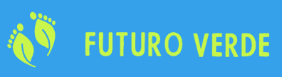

Home
Projetos
Parcerias
Sobre Nós
Cadastrar
Sobre Nós
ONG Futuro Verde: Cuidando do Meio Ambiente para um Futuro Sustentável.
Introdução:
A ONG Futuro Verde é uma organização comprometida com a preservação e cuidado do meio ambiente. Nossa missão é promover a conscientização e ações práticas que visam garantir um futuro sustentável para as gerações presentes e futuras. Acreditamos que o cuidado com a natureza é essencial para a qualidade de vida de todos os seres vivos e para a saúde do planeta como um todo.
Nossos Objetivos:
Preservação e recuperação de áreas naturais: A ONG Futuro Verde está empenhada em preservar e recuperar áreas naturais, como florestas, rios, oceanos e ecossistemas em geral. Através de parcerias com entidades governamentais e a sociedade civil, realizamos ações de reflorestamento, conservação de recursos hídricos e proteção da biodiversidade.
Educação Ambiental: Acreditamos que a educação é uma ferramenta poderosa para a transformação. Por isso, desenvolvemos programas educacionais que visam conscientizar crianças, jovens e adultos sobre a importância da preservação do meio ambiente. Promovemos palestras, workshops, cursos e atividades práticas que incentivam a reflexão e a adoção de práticas sustentáveis no cotidiano.
Engajamento comunitário: Reconhecemos que a mudança efetiva só é possível quando todos estão envolvidos. Por isso, buscamos engajar a comunidade local em nossas iniciativas, promovendo a participação ativa dos moradores e incentivando o trabalho voluntário. Realizamos mutirões de limpeza, plantio de árvores e outras ações que promovam a participação ativa da população na construção de um ambiente saudável.
Promoção de práticas sustentáveis: Além de conscientizar, é fundamental incentivar a adoção de práticas sustentáveis em nosso dia a dia. Assim, desenvolvemos projetos e campanhas que promovem a redução do consumo de recursos naturais, o uso consciente da água e da energia, a destinação correta dos resíduos, o estímulo à agricultura orgânica e outras práticas que contribuem para a preservação do meio ambiente.
Conclusão:
A ONG Futuro Verde acredita que é possível construir um futuro melhor através do cuidado com o meio ambiente. Nossos esforços estão voltados para a preservação da natureza, a conscientização da sociedade e a promoção de práticas sustentáveis. Acreditamos que cada pequena ação pode fazer a diferença e convidamos a todos a se juntarem a nós nessa jornada de cuidado e preservação do planeta, garantindo um futuro verde e sustentável para todos. Juntos, podemos fazer a diferença!
Redes sociais